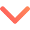

<div class="nav-bar {{ theme$ | async }}">
  <ng-container *ngIf="!(isMobile$ | async)">
    <div class="nav">
      <a
        routerLink="{{ ashak }}"
        class="button {{
          (selectedAshak$ | async) === ashak ? ashak + ' ashak' : ''
        }}"
        *ngFor="let ashak of ashaks"
      >
        <h1>{{ ashak }}</h1>
      </a>
    </div>
  </ng-container>
  <ng-container *ngIf="isMobile$ | async">
    <button (click)="openOptions()" class="ashak-select" id="">
      Choose your ashak
      
    </button>
    <div *ngIf="showOptions" class="options">
      <a (click)="showOptions = false" *ngFor="let ashak of ashaks" routerLink="{{ ashak }}"
        ><h1>{{ ashak }}</h1></a
      >
    </div>
  </ng-container>
</div>
<router-outlet></router-outlet>
